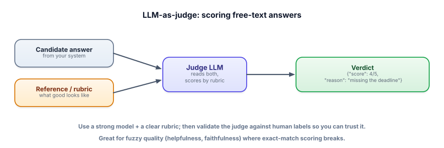

LLM-as-judge
How do you score “is this answer helpful, faithful, and well-written?” at scale, when there’s no single right string? You use a model to grade the output. It’s the workhorse of modern evals — powerful, scalable, and full of pitfalls you must know about.
Why we need a model to grade models
Exact-match and keyword checks work for closed outputs, but most LLM outputs are open-ended: a summary, an explanation, a support reply. There are countless valid wordings, so string matching either falsely fails good answers or lets bad ones through. Humans can judge quality, but they don’t scale to thousands of outputs on every change. The pragmatic answer is LLM-as-judge: prompt a capable model to score an output against a rubric (and often a reference answer), returning a structured verdict you can aggregate.

LLM-as-judge uses a model to evaluate outputs. A rubric is the explicit criteria it scores against (“correct? complete? grounded? concise?”). Reference-based judging compares the answer to a known-good answer; reference-free judging scores against the rubric alone. Pointwise judging scores one answer; pairwise judging picks the better of two (often more reliable). Because the judge is itself an LLM, you must validate it against human labels before trusting it.
Judge an answer yourself
Question: “What’s the refund window?” Reference: “30 days from delivery.” Pick a candidate answer and see how a rubric-based judge scores it — and where judge biases creep in.
LLM-as-judge
Force a structured verdict so you can aggregate scores across your golden set. A clear rubric is the whole game.
import json, ollama
def judge(question, reference, answer):
prompt = f"""You are a strict grader. Score the ANSWER from 1-5 for correctness
and completeness vs the REFERENCE. Penalize wrong facts heavily; ignore style/length.
Return JSON: {{"score": <1-5>, "reason": "<one sentence>"}}.
QUESTION: {question}
REFERENCE: {reference}
ANSWER: {answer}"""
out = ollama.chat(model="llama3.2",
messages=[{"role":"user","content":prompt}], format="json")["message"]["content"]
return json.loads(out)
v = judge("What's the refund window?", "30 days from delivery",
"Refunds are available within 14 days.")
print(v) # {"score": 1, "reason": "States 14 days; reference says 30 — factually wrong."}Run the judge over every golden-set case and average the scores — now you have a quality metric for open-ended outputs that you can track release over release.
LLM judges have well-documented biases: verbosity bias (preferring longer answers), position bias (favoring the first option in pairwise), self-preference (a model rating its own family’s outputs higher), and leniency. Mitigate by: a clear rubric that says what to ignore (style/length), swapping positions in pairwise comparisons, using a different model family as judge, and — most importantly — validating the judge against human labels so you know its scores correlate with reality.
- LLM-as-judge scores open-ended outputs where exact-match fails — at human-like quality, at scale.
- Give it a clear rubric (and a reference when you have one); force a structured verdict to aggregate.
- Pairwise (“which is better?”) is often more reliable than absolute scoring.
- Judges have biases (verbosity, position, self-preference) — mitigate, and validate against humans.
- Use code metrics for closed outputs, the judge for fuzzy quality — match the tool to the output.
Your LLM-judge consistently rates longer, more elaborate answers higher — even when a short answer is fully correct. What’s happening and how do you fix it?
Your LLM judge agrees with humans 75% of the time. What should you check before trusting it?
1. Write a 3-criterion rubric for judging a RAG answer (hint: think faithfulness, relevance, and one more).
2. Why might pairwise judging (“is A or B better?”) be more reliable than scoring each 1–5?
3. Before trusting your judge in CI, what one validation step is essential?
▸ Show solutions & reasoning
1. e.g.: Faithfulness — every claim is supported by the retrieved context (no invented facts); Relevance — the answer actually addresses the question; Completeness/clarity — it covers the key points and is understandable. (Citations could be a fourth.) A good rubric is specific enough that two judges would agree.
2. Because picking the better of two is an easier, more grounded task than assigning an absolute number — “4 vs 5” is fuzzy and drifts, but “A is more correct than B” is a concrete comparison. Pairwise tends to be more consistent and is great for comparing two prompt/model versions head-to-head (just remember to swap positions to cancel position bias).
3. Validate the judge against human labels: have humans score a sample, then check the judge’s scores correlate with theirs. If they don’t, your “metric” is noise and any decision based on it is unreliable. A judge you haven’t validated is a vibe with extra steps — confirm it tracks human judgment before you let it gate releases.
LLM-as-judge is indispensable but not infallible, so calibrate how much weight you put on it. It’s most trustworthy for relative comparisons (did v2 beat v1?) and for coarse quality bands (clearly-good vs clearly-bad), and least trustworthy for fine absolute scores (is this a 4 or a 5?) or for domains needing real expertise (medical, legal correctness) where the judge may be as wrong as the system. The professional pattern is a hierarchy: use cheap code checks where you can (exact fields, format, regexes), use the LLM judge for fuzzy quality, and keep a human in the loop for a sample — especially for high-stakes decisions and for periodically re-validating the judge.
A subtle risk worth naming: the judge and the system can share blind spots. If your generator and your judge are the same model family, the judge may rate confident hallucinations highly because it would make the same mistake — which is why using a different, ideally stronger, model as judge helps, and why human spot-checks remain essential. Treat the judge as a fast, scalable approximation of human judgment that you continuously verify, not as ground truth. Done this way, LLM-as-judge lets a small team measure quality across thousands of cases on every change — the capability that makes the eval flywheel actually spin.
You can now score quality offline. But the truest signal comes from real users. Next we contrast measuring before vs. after you ship. Next: offline vs online evals.